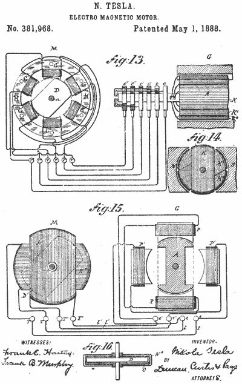
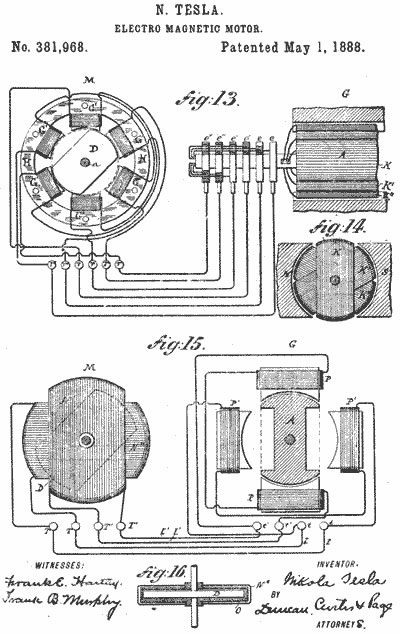

Detinjstvo i obrazovanje
Nikola je rođen u Smiljanu u Lici, od oca Milutina, Srpskog Pravoslavnog sveštenika, i majke Georgine, u nekadašnjoj Vojnoj krajini Austrijskog carstva. Kršten je u srpskoj pravoslavnoj crkvi Sv. Petra i Pavla u Smiljanu. Ime Nikola je dobio po jednom i drugom dedi. Prema krštenici je rođen 28. juna 1856. godine.
Nikolin otac je bio nadareni pisac i poeta koji je posedovao bogatu biblioteku u kojoj je i Nikola provodio svoje detinjstvo čitajući i učeći strane jezike.[6] Po jednom verovanju, Tesle vode poreklo od Draganića iz Banjana. Po navodima Jovana Dučića, Tesle su poreklom iz Stare Hercegovine, od plemena (Oputni) Rudinjani iz sela Pilatovaca u današnjoj nikšićkoj opštini. Međutim, o Teslinom poreklu postoji i verzija da su od Komnenovića iz Banjana u Staroj Hercegovini. Po legendi koja se zadržala u Banjanima, Komnenovići su zidali crkvu prilikom čega su se posvađali sa majstorima usled čega je došlo do krvavih obračuna. Kao rezultat toga, deo Komnenovića se preselio sa Tupana u drugi kraj Banjana zbog čega su ih prozvali Čivije (ekseri) koji i danas žive u Banjanima, dok se drugi deo odselio u Liku koji je prozvan Tesla po tesli, vrsti tesarskog alata.
Nikolina majka bila je vredna žena s mnogo talenata. Bila je vrlo kreativna i svojim izumima olakšavala je život na selu. Smatra se da je Nikola Tesla upravo od majke nasledio sklonost ka istraživačkom radu.[8] Teslini roditelji su, osim njega, imali sina Daneta i kćerke Angelinu i Milku, koje su bile starije od Nikole, i Maricu, najmlađe dete u porodici Tesla. Dane je poginuo pri padu s konja kad je Nikola imao pet godina i to je ostavilo veliki trag u porodici. Dane je smatran izuzetno obdarenim, dok se za Nikolu verovalo da je manje inteligentan.[9] Veruje se da je Danetova smrt osnovni razlog što otac dugo nije pristajao da mu dozvoli da pohađa tehničku školu daleko od kuće.
Prvi razred osnovne škole pohađao je u rodnom Smiljanu. Otac Milutin rukopoložen je za protu u Gospiću, te se porodica preselila u ovo mesto 1862. godine. Preostala tri razreda osnovne škole i trogodišnju Nižu realnu gimnaziju završio je u Gospiću.
U Gospiću je Nikola prvi put skrenuo pažnju na sebe kada je jedan trgovac organizovao vatrogasnu službu. Na pokaznoj vežbi kojoj je prisustvovalo mnoštvo Gospićana, vatrogasci nisu uspeli da ispumpaju vodu iz reke Like. Stručnjaci su pokušali da otkriju razlog zašto pumpa ne vuče vodu, ali bezuspešno. Tesla, koji je tada imao sedam ili osam godina, je instiktivno rešio problem ušašvši u reku i otčepivši drugi kraj creva. Zbog toga je slavljen kao heroj dana
Teško se razboleo na kraju trećeg razreda škole 1870. godine. S jeseni je otišao u Rakovac kraj Karlovca da završi još tri razreda Velike realke. Maturirao je 24. jula 1873. godine u grupi od svega sedam učenika sa vrlo dobrim uspehom jer je iz nacrtne geometrije bio dovoljan. Tada je imao 17 godina. Nakon završene mature vratio se u Gospić i već prvi dan razboleo od kolere. Bolovao je devet meseci. U tim okolnostima uspeo je da ubedi oca da mu obeća da će ga umesto na bogosloviju upisati na studije tehnike.
Naučni rad
Godine 1881. se seli u Budimpeštu gde se zapošljava u telegrafskoj kompaniji pod nazivom „Američka Telefonska Kompanija“. Tesla je pri otvaranju telefonske centrale 1881. godine postao glavni telefonijski tehničar u kompaniji. Tu je izmislio uređaj koji je, prema nekima, telefonski pojačavač, dok je prema drugima prvi zvučnik. U Budimpeštanskom parku se Tesli javila ideja o rešenju problema motora na naizmeničnu struju bez komutatora, dok je šetao sa prijateljem i recitovao Geteovog „Fausta“, a onda iznenada počeo štapom po pesku da crta linije sila obrtnog magnetskog polja. Za dva naredna meseca je razradio skice mnogih tipova motora i modifikacija koje će pet godina kasnije patentirati u Americi.
U Pariz se seli 1882. godine gde radi kao inženjer za Edisonovu kompaniju na poslovima unapređenja električne opreme. Godine 1883. trebalo je da kompanija u Štrazburgu (današnji Strazbur) osposobi jednosmernu centralu jer se na otvaranju očekivao nemački car lično. Tesli je dat ovaj zadatak i on je boravio u Strazburu od 14. oktobra 1883. do 24. februara 1884. godine.Tesla ovde potpisuje prvi poslovni ugovor u vezi realizacije prvog indukcionog motora, tako je krajem 1883. godine u Strazburu nastao prvi indukcioni motor koji koristi princip obrtnog magnetskog polja naizmeničnih struja. Počeo je i sa razvojem raznih vrsta polifaznih sistema i uređaja sa obrtnim magnetskim poljem (za koje mu je odobren patent 1888. godine).
Tesla je došao u Ameriku 6. juna 1884. godine u Njujork sa pismom preporuke koje je dobio od prethodnog šefa Čarlsa Bečelora. U preporuci je Bečelor napisao: „Ja poznajem dva velika čoveka, a vi ste jedan od njih; drugi je ovaj mladi čovek“. Edison je zaposlio Teslu u svojoj kompaniji Edisonove mašine. Tesla je ubrzo napredovao i uspešno rešavao i najkomplikovanije probleme u kompaniji. Tesli je ponuđeno da uradi potpuno reprojektovanje generatora jednosmerne struje Edisonove kompanije.
Godine 1886. Tesla u Njujorku osniva svoju kompaniju, Tesla električno osvetljenje i proizvodnja (Tesla Electric Light & Manufacturing). Prvobitni osnivači se nisu složili sa Teslom oko njegovih planova za uvođenje motora na naizmeničnu struju i na kraju je ostao bez finansijera i kompanije. Tesla je potom radio u Njujorku kao običan radnik od 1886. do 1887. godine da bi se prehranio i skupio novac za svoj novi poduhvat. Prvi elektromotor na naizmeničnu struju bez četkica je uspeo da konstruiše 1887. godine, i demonstrirao ga pred „Američkim društvom elektroinženjera“ (American Institute of Electrical Engineers, danas IEEE) 1888. godine. Iste godine je razvio principe svog Teslinog kalema i počeo rad sa Džordžom Vestinghausom u laboratorijama njegove firme „Vestinghaus električna i proizvodna kompanija“ (Westinghouse Electric & Manufacturing Company). Vestinghaus ga je poslušao u vezi njegovih ideja o višefaznim sistemima koji bi omogućili prenos naizmenične struje na velika rastojanja.
Tesla umire od srčanog udara sam u hotelskom apartmanu 3327 na 33. spratu Njujorker hotela 7. januara 1943. godine u 87. godini života. Zvanično je zabeleženo da je umro od srčane tromboze, 7. januara 1943. godine u 22 časa i 30 minuta. I pored prodaje patenata u oblasti naizmeničnih struja, Tesla umire siromašan i u dugovima. Tim povodom, gradonačelnik Njujorka Lagvardija je rekao: „Nikola Tesla je umro. Umro je siromašan, ali je bio jedan od najkorisnijih ljudi koji su ikada živeli. Ono što je stvorio veliko je i, kako vreme prolazi, postaje još veće“. Posmrtni obred je održan 12. januara u Crkvi svetog Jovana Bogoslova na Menhetnu u Njujorku. Posle službe telo je kremirano. Ispraćaju Teslinih posmrtnih ostataka prisustvovalo je oko 2000 ljudi, među kojima su bile i mnoge značajne ličnosti i nobelovci. Svi vodeći njujorški listovi imali su svoje izveštače.
Ubrzo po Teslinoj smrti FBI je zatražio od Useljeničke službe oduzimanje sve pokojnikove lične stvari i dokumenata, iako je Tesla bio američki državljanin. Kasnije je Ministarstvo odbrane kontaktiralo FBI, a Teslina dokumenta proglašena vrhunskom tajnom. Sva Teslina lična imovina po nalogu Edgara Huvera i predsednikovih savetnika dobila je etiketu „veoma poverljivo“ zbog prirode Teslinih otkrića i patenata.
Teslini izumi:
 
